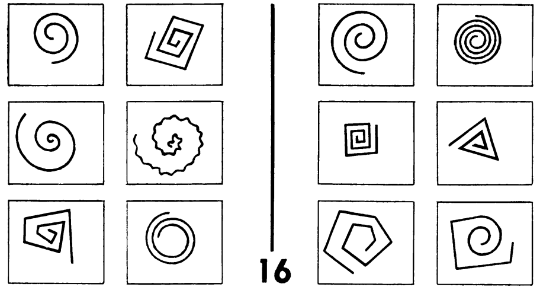
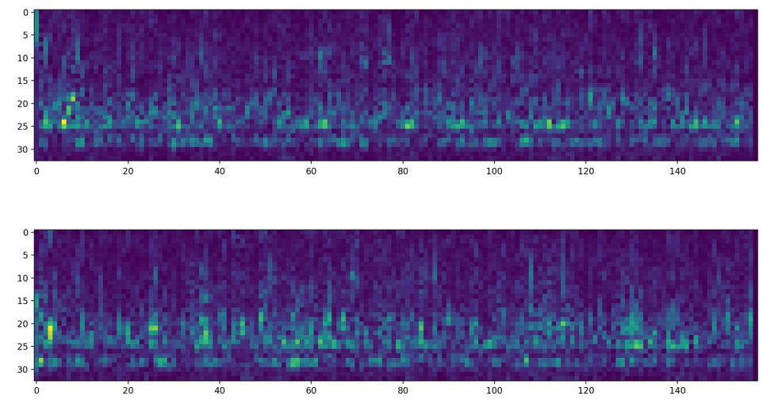
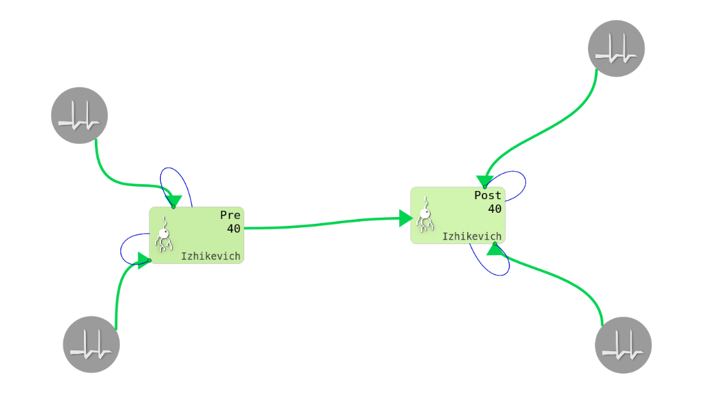
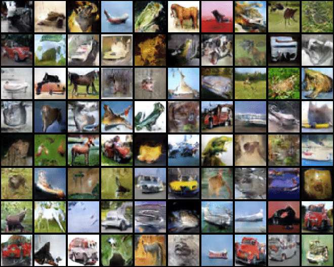
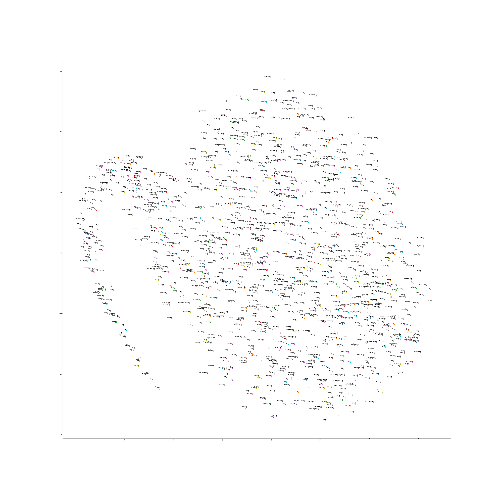

|
|
|
|
[ News | Work Experience | Teaching | Research | Projects ] |
|
|
I am a junior CS undergraduate at
BITS Pilani,
and an undergraduate researcher at the
APPCAIR Lab, BITS Goa (collaborating with
TCS Research)
where I am currently working on Neuro Symbolic Modeling under the supervision of
Prof. Ashwin Srinivasan.
Email | CV | Resume | Github | LinkedIn | StopStalk | Sourcerer |
|
[ Jul '20 ] |
Check out the AI Summer Symposium that is being organised by SAiDL! (in association with APPCAIR). |
|
[ Jul '20 ] |
I'll be a TA for the iXperience summer Data Science program! |
|
[ May '20 ] |
I'll be mentoring a summer project with Ajay Subramian for the SAiDL-Season-of-Code. |
|
[ May '20 ] |
I'll be working as a ML research intern at ECMWF as part of their summer program - ESoWC. |
|
[ May '20 ] |
I'll be interning at Media.net (Directi) as part of their Ad-Experience team. |
|
[ Jan '20 ] |
I'll be working on a sponsored project with TCS Research on Neuro-Symbolic Modeling. |
|
[ Jan '20 ] |
I'll be TAing the Machine Learning Course at BITS Pilani, Goa. |
|
[ May '19 ] |
I'll be a mentor for this summers' Machine Learning QSTP course along with Rijul and Saura. |
|
[ May '20 - Aug '20 ] |
ECMWF - Machine Learning Research Intern. |
|
[ May '20 - Jun '20 ] |
Media.net (Directi) - Summer SWE Intern. |
|
[ Jan '20 - May '20 ] |
APPCAIR Lab & TCS Research - Research Intern. |
|
[ May '19 - Jul '19 ] |
Bank of Maharashtra, Head Office - Summer SWE Intern. |
|
[ Feb '19 - Apr '19 ] |
Pixxel - Machine Learning Intern. |
|
[ Summer '20 ] |
iXperience: Data-Science Program - Teaching Assistant (TA). |
|
[ Spring '20 ] |
BITS F464: Machine Learning - Teaching Assistant (TA). |
|
[ Fall '19 ] |
Technology Incubator Programme, BITS Pilani - Project Mentor. |
|
[ Summer '19 ] |
Quark-QSTP: Introduction to Machine Learning - Instructor. |
|  |
Supervisor : Prof. Ashwin Srinivasan
The Bongard problems were introduced by Mikhail Moiseevich Bongard in 1967, in his classic pattern recognition book. |
|  |
Supervisor : Prof. Amalin Prince
Schizophrenia is a mental disorder whith symptoms including hallucinations and episodes of psychosis.
|
|  |
Supervisor : Prof. Basabdatta Sen Bhattacharya [ Report ] [ Poster ]
Spike-Timing Dependent Plasticity, or STDP is the proposed theory which aims to relate temporal spike differences to changes in synaptic weights between participating neurons.
|

|
[ Code ] [ HTML ]
Developed a Deep Learning pipeline for Emotion recognition and classification using speech data, on the MELD Dataset.
|

|
[ Code ] [ Preprocessing, Model ]
Integrated deep text and image processing models to build a Multimodal Sentiment Analysis system that classified emotions on Internet Memes across different categories.
|

|
[ Code ] [ HTML ]
Developed a Siamese Neural Net that performed few shot signature verification.
|

|
[ Code ] [ HTML ]
Worked with genomic data from different geographical locations, plotting it after dimensionality reduction.
|
|  |
[ Code ] [ HTML ] Developed a Generative Adversarial Network (GAN) to generate new instances of the CIFAR Dataset. |
|  |
[ Code ] [ HTML ]
Generated word embeddings using GloVe, and the Large Movie Review Dataset.
|
|
[ Template ] [ Toggle All ] |